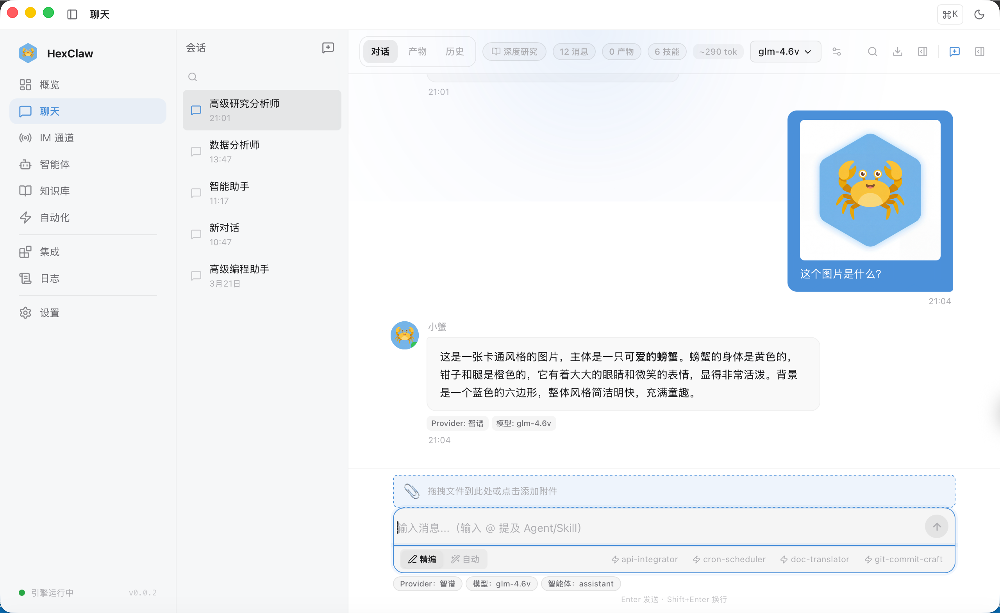

河蟹 AI 文档
对话与会话
多模型聊天、会话管理、Artifact、消息搜索与导出。
基本对话
进入 对话 页面即可开始聊天。河蟹 AI 支持：
- 流式输出 — AI 回复实时逐字显示
- Markdown 渲染 — 完整支持 Markdown 语法，代码块自动语法高亮
- 多模型切换 — 同一会话中可随时切换不同服务商和模型
- 消息操作 — 复制、编辑、重新生成回复

文件与多模态
输入框支持发送多种类型的附件（取决于所选模型能力）：
| 类型 | 支持模型 |
|---|---|
| 图片 | GPT-4o、Claude 全系、Gemini 全系、Qwen-VL、豆包 Vision、LLaVA |
| 视频 | Gemini 2.5 / 2.0 系列 |
| 音频 | Gemini 2.5 / 2.0 系列 |
| 文件 | 所有文本模型（自动提取内容） |
提示：输入框会根据当前模型的 capabilities 自动显示/隐藏对应的附件按钮。
会话管理
- 新建会话 — 点击左侧 "+" 按钮创建
- 会话历史 — 左侧面板显示所有历史会话，点击切换
- 删除会话 — 右键或滑动操作删除
- 会话持久化 — 所有消息存储在本地 SQLite 数据库中
Artifact 预览
当 AI 输出代码块时，河蟹 AI 会自动提取为 Artifact：
- 支持类型：
code（代码）、html（网页预览）、markdown、file - 代码 Artifact 带语法高亮和一键复制
- HTML Artifact 可直接在侧面板中实时预览
消息搜索
使用 搜索对话 功能（⌘+F）可以跨所有会话搜索消息内容。
消息导出
点击会话菜单中的 导出 按钮，支持三种格式：
- JSON — 完整结构化数据，适合备份和导入
- Markdown — 可读性好，适合归档和分享
- PDF — 适合正式文档输出
@ 提及
在输入框中输入 @ 可以弹出提及菜单，快速引用 Agent 或团队成员加入对话。
聊天模式
河蟹 AI 提供三种聊天模式，通过顶部标签切换：
| 模式 | 用途 | 说明 |
|---|---|---|
| 对话 | 日常问答 | 标准聊天，直接与 LLM 对话 |
| Agent | 任务执行 | Agent 自主规划、调用工具、多步执行 |
| 深度研究 | 调研报告 | 多步搜索→分析→综合→生成报告，显示 4 阶段进度面板 |
提示：从 Agent 管理页点击角色的"聊天"按钮，会自动切换到 Agent 模式并以角色名作为会话标题。
文档解析
聊天时可直接上传文档文件，河蟹 AI 会自动提取文本内容作为上下文发送给 LLM：
| 格式 | 支持类型 |
|---|---|
.pdf — 提取全部页面文本，显示页数 | |
| Word | .docx — 提取正文内容 |
| Excel | .xlsx / .csv — 按 Sheet 提取为表格文本 |
| 纯文本 | .txt / .md / .json |
文本超过 50,000 字符时会自动截断并提示。
聊天参数
点击聊天区顶部工具栏的 ⚙️ 参数 按钮，可调整当前会话的参数：
- Temperature（0 ~ 2）— 越高回复越有创意，越低越确定
- Max Tokens（256 ~ 128,000）— 单次回复的最大长度
参数仅对当前会话生效，不影响其他会话。
消息操作
右键菜单
在消息气泡上右键（或长按），弹出上下文菜单：
- 复制 — 复制消息内容到剪贴板
- 重试 — 删除当前回复并重新生成
- 编辑 — 修改已发送的用户消息并重新获取回复
- 删除 — 删除该消息（同步删除数据库记录）
会话重命名
在左侧会话列表中，双击会话标题可直接重命名。也可通过右键菜单选择"重命名"。
Token 计数
顶部工具栏显示当前会话的预估 Token 数（如 ~1.2k tok），帮助评估上下文窗口使用情况。
语音输入
点击输入框右侧的 🎤 麦克风按钮，启动语音识别（STT）。录音完成后自动转为文本填入输入框。需要浏览器支持 Web Speech API 或配置外部 STT 服务。
聊天快捷键
| 快捷键 | 功能 |
|---|---|
Enter | 发送消息 |
Shift + Enter | 换行 |
⌘ + F | 搜索消息 |
Esc | 停止生成 |
@ | 提及 Agent / Skill |